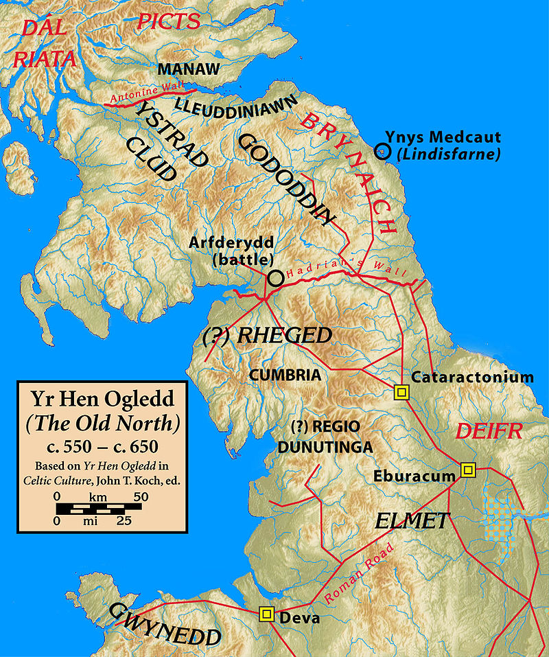

Pais Dinogat - Peis Dinogad
La robe de Dinogad - Dinogad's smock
|
Yr Hen Ogledd
On a vu, à propos de Merlin dans le Barzhaz Breizh que Gwendoleu, chef et ami de Merlin mourut en 573 à la bataille d'Arturet (en gallois: Arfderydd), selon les "Annales de Cambrie". On sait aussi que le manuscrit du 13ème siècle, "La livre d'Aneurin" attribue à ce poète un chant "Y Gododdin" qui déplore le sort de guerriers de la nation des Votadini engagés contre les Angles à Catraeth vers l'an 600 et qu'il est question dans cette élégie du "beau chant de Myrddin". Ces deux textes illustrent l'existence entre le 5ème et le 11ème siècle de royaumes brittoniques au nord de l'actuelle Angleterre, dans ce qu'on appelle le "Vieux Nord" (gallois: Yr Hen Ogledd) . Les considérations exposées dans la note 8 conduisent à localiser la berceuse "La robe de Dinogad" ci-après sur les rives de la Derwent de Cambrie (Cumbria) , dans l'ancien royaume de Rheged. Pais Dinogat Bien que "La robe de Dinogad" fasse partie intégrante du poème "Y Goddodin" dans le livre d'Aneurin, il s'agit sans doute d'une adjonction en marge qu'un copiste a intégrée à tort dans le texte principal, pensant qu'elle en faisait partie. La teneur du poème et le dialecte qu'il utilise suggèrent qu'il date d'environ 650 et qu'il fut rédigé dans le royaume de Strathclyde (en gallois "Ystrad Clud"). Une mère s'adresse en le berçant à son petit Dinogad, enveloppé dans une pelisse de martre, à qui elle vante les talents de chasseur de son père. Elle énumère les animaux figurant à son tableau de chasse. Ce père était riche et puissant. Il avait 8 serviteurs. La berceuse étant exclusivement au passé, on peut supposer que ce père n'est plus de ce monde. Brittonique et celtique Le Cambrien (Cumbrian) était un dialecte brittonique du nord, rameau de la branche orientale des langues celtes. De cette branche il existe encore de nos jours trois représentants: le gallois et le breton encore parlés et le cornique que l'on tente de faire renaître de ses cendres. Le site Wikipédia publie la traduction anglaise qu'on trouvera ci-dessous. La traduction bretonne que nous proposons également conduit à suggérer certaines remarques indiquées en notes. Une grande quantité de mots "cambriens" et bretons se correspondent, en particulier tous les noms d'animaux, sauf la "martre". Il est remarquable qu'à Brest ou à Vannes, on puisse sans trop d'effort, comprendre un langage qui se parlait au 7ème siècle au nord de l'Angleterre. Musique On ignore sur quelle mélodie cette berceuse se chantait. Je remercie mon ami de Cornouailles, Richard Carlyon , de m'avoir signalé cette vidéo . où l'on peut entendre une mise en musique moderne de ce poème par le trio gallois de musique traditionnelle Ffynnon . Leur album "Celtic Music from Wales" combine la berceuse avec des formules cambriennes servant à compter les moutons (Cumbrian sheep-counting rhymes) - ou les mailles lorsque l'on tricote - dans lesquelles on récite des noms de nombres de 1 à 20, proches du gallois ou du breton. Ces formules en usage dans des régions du Nord de l'Angleterre telles que le District des Lacs, le Yorkshire, le Lancashire, Lincolnshire... ont survécu aux langues celtes qui se sont éteintes au 6ème siècle. Ce système vigésimal est encore en usage en breton, mais non en gallois. (Cf. Yan, tan, tethera ) |
Yr Hen Ogledd
As stated in the essay Merlin in the Barzhaz Breizh , the "Annals of Cambria" report that Gwendoleu, a kinglet who was a friend of Merlin, died in 573 at the battle of Arturet (in Welsh: Arfderydd). Besides the 13th century manuscript "The Book of Aneurin" attributes to the said poet a song "Y Gododdin" deploring the fate of Votadini warriors engaged against the Angles at the fight of Catraeth, around the year 600 and mentioning "Myrddin's beautiful song ". Both texts illustrate the existence, between the 5th and 11th centuries of Brittonic kingdoms to the north of present-day England, also known as the "Old North" (Welsh: Yr Hen Ogledd). The explanations in note 8 prompt us to locate the lullaby at hand, “Dinogad's smock”, on the banks of the river Derwent of Cumbria , in the ancient kingdom of Rheged. Pais Dinogat Though “Dinogad's smock” appears in the “Book of Aneurin” as part of the poem "Y Gododdin", it should have been first a margin addition to it, which a later copyist mistakenly believed to form part of the main work and interpolated into the text. Both contents and language suggest that this lullaby dates back to around 650 and was written in the Kingdom of Strathclyde (Welsh: "Ystrad Clud"). A mother addresses her baby boy Dinogad, wrapped in a marten-skin smock in his cradle, and describes how his father used to set out on a hunt. The poem lists the animals that he caught. Dinogad's father was a rich and powerful man since he possessed eight men-servants. The exclusive use of the past tense suggests that he is no longer alive. Brittonic and Celtic Cumbrian was a Nothern Brittonic dialect. Brittonic, the Eastern branch of Celic languages, exists today in three forms: Welsh and Breton, which are still spoken, and Cornish which scholars endeavour to raise from its ashes. The Wikipedia page devoted to that topic publishes the below English translation. Our Breton translation leads to suggesting some remarks mentioned in notes. A large number of Cumbrian and Breton words match each other, in particular all animal names except "marten". It is remarkable that, in Brest or Vannes, one may, without much effort, understand a language spoken in the 7th century south of the Scottish border!
Music
|
| Cymraeg | Brezhoneg | Français | English |
|---|---|---|---|
|
Peis Dinogat
1. Pais [1] dinogat [2] e vreith vreith. o grwyn balaot [3] ban wreith. 2. chwit chwit chwidogeith. gochanwn gochenyn wythgeith [4]. 3. pan elei dy dat ty e helya; llath ar y ysgwyd llory [5] eny law. 4. ef gelwi gwn gogyhwg. giff gaff. dhaly dhaly dhwg dhwg. 5. ef lledi bysc yng corwc. [6] mal ban llad llew llywywg. 6. pan elei dy dat ty e vynyd. dydygai ef penn ywrch [7] penn gwythwch penn hyd. 7. penn grugyar vreith o venyd. penn pysc o rayadyr derwennyd. [8] 8. or sawl yt gyrhaedei dy dat ty ae gicwein o wythwch a llewyn a llwyuein. nyt anghei oll ny uei oradein. |
Sae Dinogad
1. Peis [1] Dinogad [2] zo brizh, brizh Eus krec'hin martr [3] louet a ris 2. C'hwitell, c'hwitell, c'hwitelladenn! Kanomp an eizh gwaz [4] o c'hanenn! 3. Pa'z ae da dad-te d'an hemolc'h, Lazh war e skoaz, lorc'henn [5] 'n e zorn, 4. Eñ galve e gon chase: « Gif, gaf, dalit, dalit, doug, doug! » 5. Eñ lazhe pesk en e "gorag" [6] Evel ma lazh leon loened. 6. Pa'z ae da dad-te d'ar menez, Eñ degase ur penn yourc'h, [7] Penn gouez-hoc'h, penn heizez, 7. Penn glujar vrizh eus ar menez, Penn pesk a Red-dour Derwennez [8]. 8. Ar pezh a gourhede da dad-te e c'hoaf: Pe gouez-hoc'h, pe liñ, pe louarn: Ne ziflipe an holl n'oa divaskell gante. |
La robe de Dinogad
1. Dinogad, ta saie tachetée, En peaux de martre je l'ai faite. 2. Siffle, siffle, petit sifflet, Que nos huit serviteurs répètent: 3. Lorsque ton père allait chasser, Crosse en main, gaule sur l'épaule, 4. Ses chiens rapides il hélait: "Ouah, ouah, attrape, attrape, apporte!" 5. Pêchant en coracle un poisson, Comme un lion tuerait une bête. 6. Lorsqu'il s'en allait sur les monts, Il nous rapportait de sa quête, Chevreuil, sanglier ou bien biche, 7. Perdrix bigarée des montagnes Ou poisson de Derwentwater. 8. Qu'à portée de son épieu passe Lynx, sanglier ou bien renard, Sans ailes toute proie trépasse! |
Dinogad's smock
1. Dinogad's smock, speckled, speckled, I made from the skins of martens. 2. Whistle, whistle, whistly we sing, the eight slaves sing. 3. When your father used to go to hunt, with his shaft on his shoulder and his club in his hand, 4. He would call his speedy dogs, [1] "Giff, Gaff, catch, catch, fetch, fetch!", 5. He would kill a fish in a coracle, as a lion kills an animal. 6. When your father went to the mountain, he would bring back a roebuck, a wild pig, a stag, 7. A speckled grouse from the mountain, a fish from the waterfall of Derwennydd [2] 8. Whatever your father would hit with his spear [3], whether wild pig or lynx or fox, nothing that was without wings would escape. |
|
[1] Peis:
le gallois pais et l'ancien breton peis viennent du latin pexa qui désignait une tunique de femme ou d'enfant.
[2] Dinogad: nom porté par le dernier roi de Strahclyde, Donnchad, le Duncan du Macbeth de Shakespeare. Il signifie "fort de combat" (Dun- Kad). [3] Balaod: pluriel de belau. Ce mot gallois existe sous diverses formes (bela, bele...) désignant tantôt le loup (breton: bleiz), tantôt la martre (ou la belette ou le putois). Le mot ban qui suit pourrait signifier "blanc, blanchâtre, gris ou pâle. [4] Wythgeith: il faut sans doute lire wyth geith (breton: eizh gwaz) huit "vassaux" (serviteurs). Geith correpond au breton gwizien, pluriel de gwaz. [5] Llath et llory: correspondent aux mots bretons lazh et lorc'h(enn), gaule ou latte et limande de charrette. [6] Corwg: Coracle. Le nom de cette barque ronde individuelle pourrait être d'origine latine: corium. [7] Penn ywrch, penn gwythwch etc: "tête" de chevreuil, de sanglier, etc. Cette façon de désigner les animaux pris individuellement n'est plus en usage en gallois, contrairement au breton moderne. [8] Rayadyr Derwennyd: Si le premier mot est l'ancêtre du gallois moderne rhaedr, rheadr, il signifie cascade, chute d'eau. S'il répond au breton red-dour, il signifie rivière. L'ensemble traduit le toponyme anglais "Derwentwater". Deux localités peuvent correspondre à cette dénomination: Durham Derwent à l'est, sur le territoire des Gododdin qui n'a pas de cascades et Cumbrian Derwent ou Lodore Falls à l'ouest dans l'ancien royaume de Rheged, où Falls signifie chutes d'eau.
|
 Source "Wikipedia" |
[1] Peis:
Welsh pais and Old Breton peis come from the Latin pexa which refers to a woman's or child's shift.
[2] Dinogad: A name worn by the last king of Strahclyde, Donnchad, the "Duncan" in Shakespeare's drama "Macbeth". It means “fighting fort” (Dun-Kad). [3] Balaod: plural of "belau". This Welsh word exists in various forms (bela, bele...) sometimes applying to the "wolf" (Breton: bleiz), sometimes to the "marten" (or the weasel or the skunk). The word "ban" that follows could mean "white, whitish, gray or pale". [4] Wythgeith: We should probably read "wyth geith" (Breton: "eizh gwaz") eight “vassals” (servants). Geith corresponds to Breton "Gwizien", plural of "gwaz". [5] Llath and llory: correspond to the Breton words "lazh" and "lorc'h(enn)", pole or lath and spar of cart. [6] Corwg: Coracle. The name of this round one man's boat could be of Latin origin: "corium". [7] Penn ywrch, penn gwythwch etc: "head" of deer, wild boar, etc. This way of referring to individual animals is no longer used in Welsh, but still in use in modern Breton. [8] Rayadyr Derwennyd: If the first word points to modern Welsh "rhaedr, rheadr", it means "waterfall". If it is equivalent to Breton "red-dour", it means "river". The whole phrase is rendered by the English toponym "Derwentwater". Two localities can correspond to this name: "Durham Derwent" in the east, in the territory of the Gododdin which does not have waterfalls and "Cumbrian Derwent" or "Lodore Falls" in the west in the ancient kingdom of Rheged, where "Falls" means "waterfalls".
|
Retour à "Marche d'Arthur"
Retour à "Merlin du Barzhaz"
Taolenn